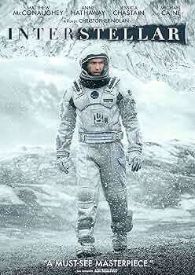
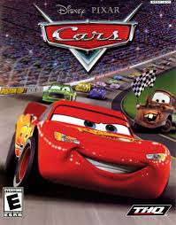

"Stranger Things" is a nostalgic, supernatural TV series set in the 1980s. It follows a group of kids who encounter bizarre occurrences, government conspiracies, and a parallel dimension called the Upside Down.

Interstellar
"Interstellar" is a gripping sci-fi film directed by Christopher Nolan. It explores humanity's quest for survival beyond Earth, featuring mind-bending concepts like time dilation and the search for a new habitable planet.

Cars
"Cars" is an animated film from Pixar, featuring anthropomorphic vehicles in a world where they live like humans. It follows Lightning McQueen, a cocky race car, on a journey of self-discovery and friendship in Radiator Springs.